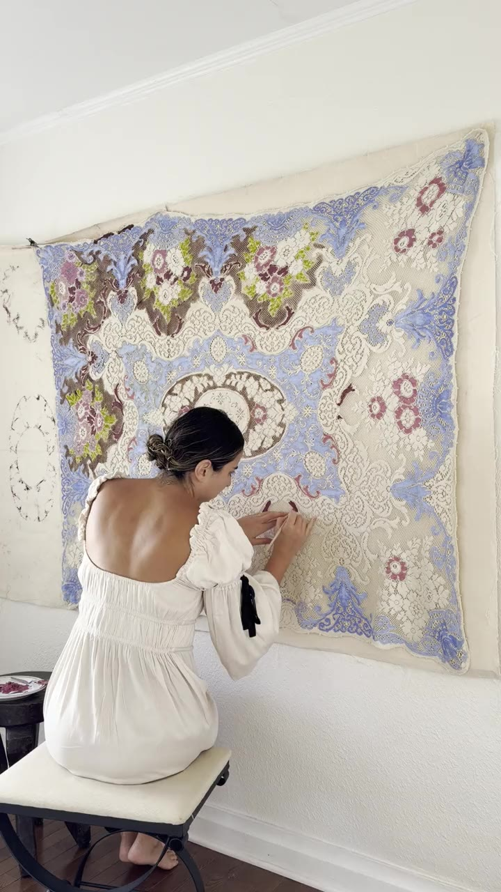

Her path to art didn’t begin in a studio. It began in the world of technology, where, surrounded by screens and systems, she felt something quietly missing. Her soul was asking for a place to breathe, to make something with her hands, to feel human again. Art became that place.
Self-taught, she began on a grand scale, learning color and texture across large murals, letting the work teach her as she went. Each wall was a lesson in boldness, patience, and play.
With her most recent collection, something deeper called to her: tradition, and the tender pull of nostalgia. Some of her most cherished memories live around her abuelita’s dining table, where loved ones gathered over a traditional meal, sharing food, stories, and laughter. Kiannalie wanted to find a way to hold onto that feeling, and to give it a home.
and thus, the beginning of CASA ROSA.
Through this collection, Kiannalie takes the beautiful, fleeting pieces of memory, a shared table, a familiar dish, the warmth of a full house, and immortalizes them in piece. Each piece is an invitation to pull up a chair, remember your own grandmother’s table, and feel at home.